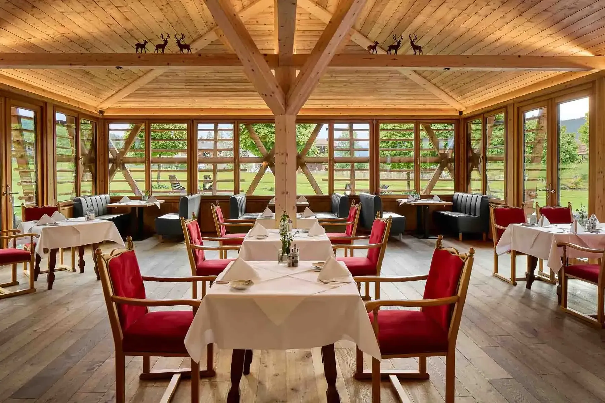
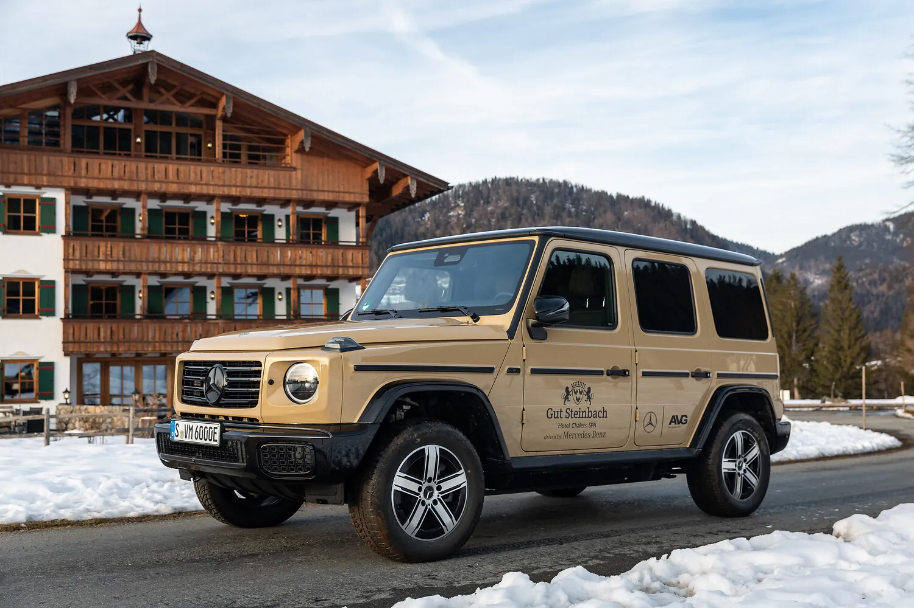
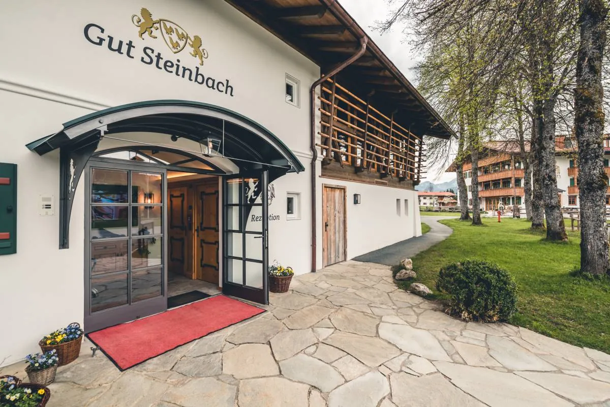

Kontakt & Anreise · Reit im Winkl, Chiemgau
Der kürzeste Weg zu 51 Hektar Ruhe.
Von München in 1,5 Stunden, von Salzburg in 45 Minuten — und am Telefon Menschen, die das Haus kennen.
01 Kontakt

Sprechen Sie mit Menschen.
Keine Warteschleife, kein Callcenter — am Steinbachweg nimmt jemand ab, der weiß, welches Chalet morgens die Sonne hat.
Gut Steinbach Hotel Chalets SPA
Steinbachweg 10, 83242 Reit im Winkl
+49 8640 807-0 · reservierung@gutsteinbach.de
02 Anreise

Ankommen ist einfach.
Von München — ca. 1,5 Stunden
A8 Richtung Salzburg bis Ausfahrt Bernau, weiter über Grassau, das Achental und Marquartstein nach Entfelden. Dort Richtung Winklmoosalm halten, nach 800 Metern links nach Blindau.
Von Salzburg — ca. 45 Minuten
A8 bis Ausfahrt Grabenstätt, dann über Marquartstein nach Reit im Winkl/Entfelden.
03 Häufige Fragen
Was Gäste vorab wissen wollen.
Sind Hunde willkommen?
Ja, Hunde sind willkommen — maximal zwei pro Zimmer, für 30 € pro Tag und Hund. Direkt vor der Tür liegen 51 Hektar Gutsgelände zum Schnüffeln und Auslaufen.
Ist das Frühstück inklusive?
Ja, das Gutsfrühstück ist in allen Raten enthalten. Wer im Chalet wohnt, bekommt es auf Wunsch kostenfrei ins Chalet geliefert.
Was kostet die Halbpension?
Die Halbpension kostet 55 € pro Person und Nacht. Dafür wählen Sie am Abend ein 3-Gänge-Menü im Restaurant HEIMAT.
Kann ich das SPA auch als externer Gast nutzen?
Ja. Der Day Spa im Heimat & Natur SPA kostet ab 85 € (Montag bis Donnerstag), dazu gibt es die Pakete Deluxe und Excellence. Geöffnet ist täglich von 11 bis 20 Uhr.
Gibt es eine Klimaanlage?
Nein, darauf verzichtet das Haus bewusst — der Nachhaltigkeit zuliebe. Ventilatoren stehen bereit, und die Lage auf 700 Metern sorgt für kühle Nächte.
Wie storniere ich kostenfrei?
Bis 7 Tage vor Anreise stornieren Sie kostenfrei. Einzige Ausnahme: Sparangebote mit 15 % Preisvorteil sind nicht stornierbar.
Ab wann ist Check-in?
Der Check-in ist ab 15 Uhr möglich, der Check-out bis 11 Uhr am Abreisetag.
Warum direkt buchen?
Auf gutsteinbach.de gilt die Bestpreis-Garantie, die Stornierung bleibt flexibel, und am Telefon berät Sie das Team persönlich: +49 8640 807-0.
Ihre Frage ist nicht dabei? +49 8640 807-0 oder reservierung@gutsteinbach.de — Sie erhalten eine Antwort von jemandem, der das Haus kennt.
04 Karriere & Post vom Gut
Bleiben wir in Verbindung.
Arbeiten auf dem Gut
Küche, Service, Spa, Landwirtschaft — wer auf 51 Hektar arbeiten möchte, statt in einem Büro, schreibt uns kurz und formlos.
Bewerbung per E-MailPost vom Gut
Saisonales, Termine, Angebote — ein paar Mal im Jahr, kein Lärm. Anmeldung unten im Fußbereich oder per E-Mail.
Newsletter anfordern
Der Weg ist kurz. Der Aufenthalt darf lang sein.
Check-in ab 15 Uhr, kostenfreie Stornierung bis 7 Tage vor Anreise — und der Bestpreis gilt nur hier.
Aufenthalt buchen